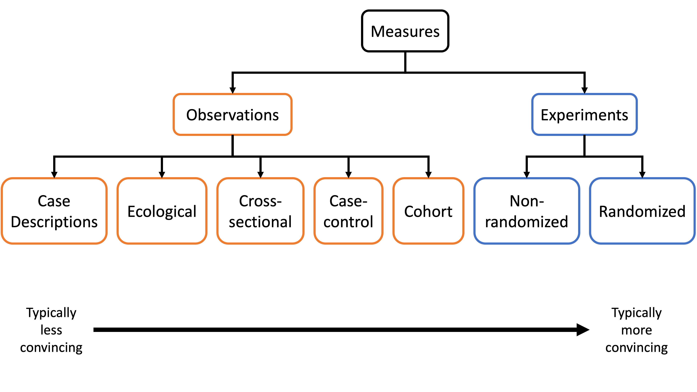
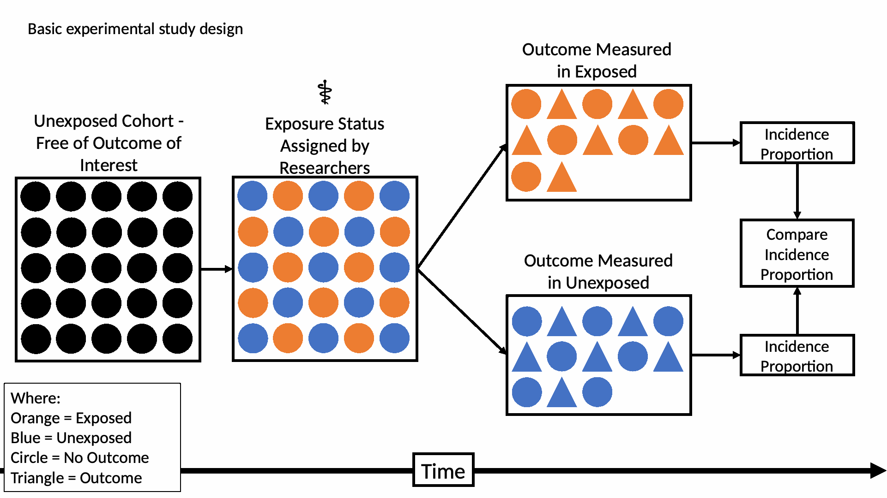
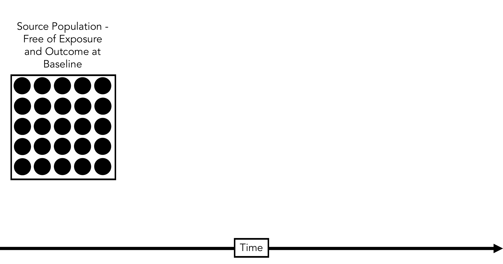
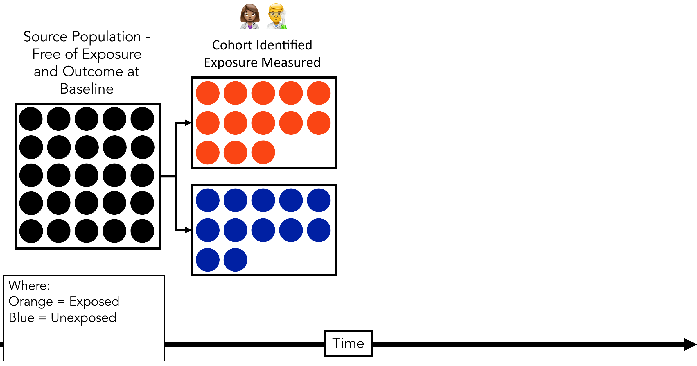
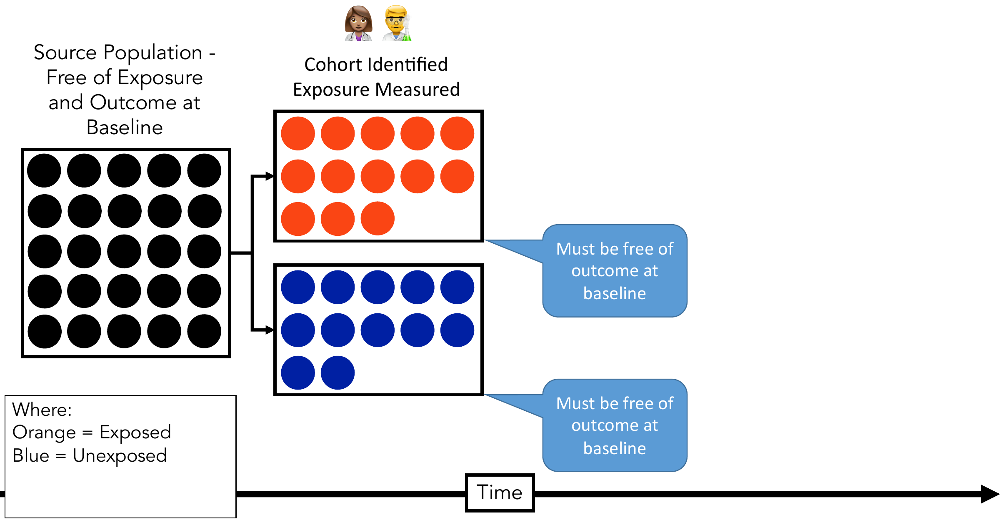
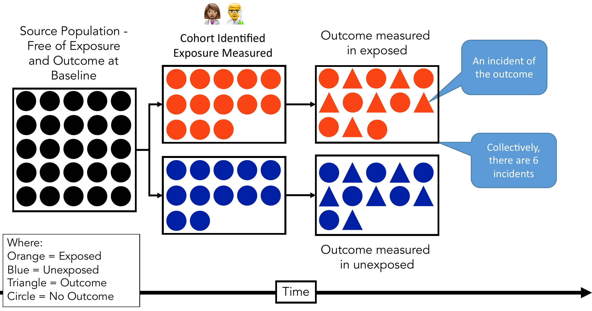
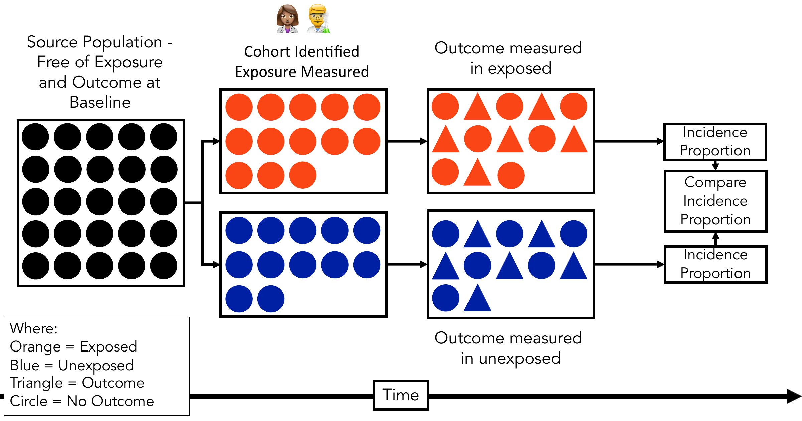
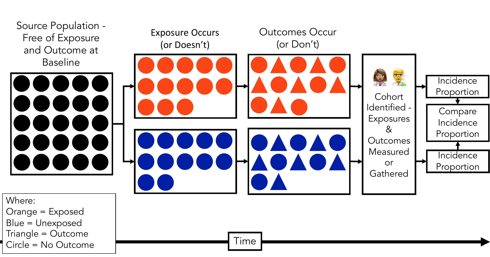

Experimental and Cohort Studies
APHS 20203 · Epidemiology & Biostatistics
Review: Association vs Causality
What is an association?
The distribution of an outcome differs across levels of an exposure.
- For example, the outcome may be more common in one group than another.
Knowing something about X helps us predict something about Y.
Review: Association vs Causality
What distinguishes an association from a causal relationship?
Counterfactual definition: The outcome would differ for the same person if their exposure had been different.
Intervention definition: Intervening to change the exposure would change the outcome or its probability. Said another way, X is a cause of Y if we can change Y by manipulating X.
Helpful question: If I changed X and held everything else constant, would I expect Y to change?
Review: Deterministic vs Probabilistic Causality
What distinguishes deterministic causality from probabilistic causality?
Deterministic: Exposure always produces the outcome.
Probabilistic: Exposure increases the likelihood of the outcome.
Two Categories of Analytic Studies
Observational design
- Investigator does not assign exposure
- Observes existing differences in exposure and outcome
- Examples include cross-sectional, cohort, and case-control studies
Experimental design
- Investigator assigns exposure or intervention
- Often uses randomization
- Examples include randomized controlled trials (RCTs)
Hierarchy of Study Designs

Basic Experimental Study Design

RCT: Randomization
Randomization assigns participants to treatment groups using a chance process.
Why randomization matters
Breaks the link between baseline causes of the outcome and treatment assignment.
Protects against confounding by measured and unmeasured factors, without needing to identify them all.
Produces exchangeable groups on average: groups expected to have the same outcome risk if given the same treatment.
Take-home message
Randomization protects against confounding on average. Chance differences between groups can still occur in a particular trial.
Practice: Baseline Group Comparability
Physicians were randomly assigned to aspirin (11,037) or placebo (11,034).
| Baseline characteristic | Aspirin, n | Placebo, n | Ratio* |
|---|---|---|---|
| Past cigarette smoking | 4,373 | 4,301 | 1.02 |
| Current cigarette smoking | 1,213 | 1,225 | 0.99 |
| Diabetes mellitus | 275 | 258 | 1.07 |
Ratio of the proportion with the characteristic in the aspirin group to the proportion in the placebo group; labeled RR in the source table.
- What does a ratio close to 1 tell us about a baseline characteristic?
- Do these rows describe treatment outcomes or participants before treatment?
- Do similar proportions for these three characteristics establish that the groups are identical in every way?
Interpreting the Baseline Table
- Ratios close to 1 indicate similar proportions with these measured baseline characteristics.
- These rows contain baseline comparisons, so they describe participants before treatment.
- Similarity in these measured characteristics does not establish similarity in every measured or unmeasured characteristic.
- Randomization supports comparability on average; chance differences can remain in a particular trial.
Validity
Internal validity: Does the study provide an unbiased estimate of the association in the population studied?
External validity: Can the findings be generalized to other populations?
RCTs: Strengths & Limitations
Strengths
Randomization improves group comparability
Strong internal validity
Typically provides strongest evidence for the causal effects of interventions
Limitations
Often expensive and time-consuming
May have limited generalizability to real-world populations
Not always ethical or feasible
What Is a Cohort?
A cohort is an identified group of people whose membership is defined by a shared characteristic or event.
Example: Everyone who graduated from TCU in 2026.
We can identify who belongs to the group.
In epidemiology, we often follow a cohort over time to observe health outcomes.
Key difference between a population and a cohort: Every member of the cohort is enumerated (i.e., known or listed). That is not necessarily true of a population.
Basic Experimental Study Design
Common Prospective Cohort Study Design

Common Prospective Cohort Study Design

Common Prospective Cohort Study Design

Population at Risk
All members of the cohort should be at risk of developing the outcome of interest.
Implies that all members should be free of the outcome of interest at the outset of follow-up.
Common Prospective Cohort Study Design

Common Prospective Cohort Study Design

Common Retrospective Cohort Study Design

Prospective vs. Retrospective Cohorts
Both follow the same direction: Exposure → Outcome
Both sample on the Exposure
Prospective Cohort
Exposure measured in the present
Outcomes occur in the future
Retrospective Cohort
Exposure and outcome already occurred
Uses existing records
Limited by data quality and missing variables
Key Difference: Timing of data collection — not sampling design.
When to Conduct a Cohort Study
Exposure is rare: efficient for studying uncommon exposures
Incidence must be measured: can directly calculate risk and RR
Temporal sequence is important: exposure clearly precedes outcome
Multiple outcomes are of interest: one exposure → several possible diseases
Follow-up is feasible: resources, time, and stable population available
Design Logic: Cohort studies are strongest when you need clear exposure → outcome tracking over time.
The Framingham Heart Study
Study Design: Prospective Cohort Study
What Was Done:
Enrolled 5,209 adults to study the development of cardiovascular disease (CVD)
Measured baseline exposures (e.g., blood pressure, cholesterol, smoking)
Followed participants over time for incident CVD
Why This Design Was Appropriate:
Needed to measure incidence
Required clear exposure → outcome sequence
Allowed one exposure to be linked to multiple outcomes
Long-term follow-up was essential
Key Lesson: Cohort studies are powerful for identifying risk factors over time.
Potential Biases in Cohort Studies
Selection Bias
Loss to follow-up (attrition): selective dropout can cause attrition bias
Example: Participants who developed severe illness were less likely to return for follow-up visits → risk may be underestimated.
Information Bias
Misclassification of exposure
Example: Smoking status or diet self-reported inaccurately at baseline.
Confounding
A third variable related to both exposure and outcome
Example: Age is associated with higher blood pressure and higher CVD risk.
Key Question: Which bias is most important in a long prospective cohort?
Assessing Risk in Cohort Studies
Risk (Incidence Proportion): Number of new cases ÷ population at risk
Relative Risk (RR): Risk in exposed ÷ Risk in unexposed
Absolute Risk Difference (ARD): Risk in exposed − Risk in unexposed
Key Distinction:
RR shows strength of association
ARD shows public health impact
A Prospective Cohort Study Example
- Research Question: Is passive tobacco smoke exposure associated with increased respiratory infections in children?
Study Design:
Enroll disease-free children (<12 years)
Classify by household smoking exposure
- Exposed vs Not exposed
Follow forward in time
- Measure incident infections
Potential Confounders:
Air pollution
Socioeconomic status
Crowded housing
Next Step: Calculate Risk, RR, and ARD
Reading a 2×2 Table
| Infection (+) | Infection (–) | Total | |
|---|---|---|---|
| Exposed | A | B | A + B |
| Not Exposed | C | D | C + D |
Rows identify exposure status; columns identify infection status.
Each letter represents a count of people. For example, A is the number of exposed children who developed an infection.
A + B is the total exposed group; C + D is the total unexposed group.
These are the denominators for calculating risk in each group.
Exercise: Risk (Incidence Proportion)
| Infection (+) | Infection (–) | Total | |
|---|---|---|---|
| Exposed | 100 | 400 | 500 |
| Not Exposed | 30 | 470 | 500 |
Calculate Risk (Incidence Proportion)
Risk in the exposed = A / (A + B)
Risk in the unexposed = C / (C + D)
Interpretation: Risk (Incidence Proportion)
Risk in the exposed = 100 / 500 = 0.20 = 20%
- 20 out of every 100 exposed children developed an infection during follow-up.
Risk in the unexposed = 30 / 500 = 0.06 = 6%
- 6 out of every 100 unexposed children developed an infection during follow-up.
Exercise: Relative Risk (RR)
| Infection (+) | Infection (–) | Total | |
|---|---|---|---|
| Exposed | 100 | 400 | 500 |
| Not Exposed | 30 | 470 | 500 |
Calculate Relative Risk (RR)
- RR = Risk in the exposed ÷ Risk in the unexposed
Interpretation: Relative Risk (RR)
RR = 0.20 ÷ 0.06 ≈ 3.33
Exposed children had about 3.33 times the risk of infection compared with unexposed children during follow-up.
Passive smoke exposure was associated with a substantial increase in risk during follow-up.
Exercise: Absolute Risk Difference (ARD)
| Infection (+) | Infection (–) | Total | |
|---|---|---|---|
| Exposed | 100 | 400 | 500 |
| Not Exposed | 30 | 470 | 500 |
Calculate Absolute Risk Difference (ARD)
- ARD = Risk in the exposed − Risk in the unexposed
Interpretation: Absolute Risk Difference (ARD)
ARD = 0.20 − 0.06 = 0.14 = 14 percentage points
There were 14 more infections per 100 children in the exposed group than in the unexposed group during follow-up.
The risk difference describes the excess burden of disease associated with passive smoke exposure.
Poll: Interpreting Relative Risk
In a cohort study examining smoking and cardiovascular disease, the Relative Risk (RR) for smokers compared to non-smokers is 1.50. What does this mean?
A. Smokers have a 50% lower risk of CVD
B. Smokers have a 50% higher risk of CVD
C. Smokers and non-smokers have the same risk
D. Smoking prevents cardiovascular disease
Poll: Interpreting Risk Difference
In a cohort study of smoking and cardiovascular disease (CVD), the risks over the same follow-up period are:
Risk in smokers = 20%; Risk in non-smokers = 10%
Absolute Risk Difference (ARD) = 20% − 10% = 10 percentage points
What does this ARD mean?
A. There were 10 more CVD cases per 100 smokers than per 100 non-smokers during follow-up
B. Smoking increases CVD risk by 10 times compared to non-smokers during follow-up
C. There was no association between smoking and CVD during follow-up
D. 10 out of every 100 cases of CVD were caused by smoking during follow-up
Strengths and Limitations
Strengths
Directly measure incidence
Establish clear temporal sequence (Exposure → Outcome)
Study rare exposures efficiently
Examine multiple outcomes from one exposure
Limitations
Time-consuming and costly
Vulnerable to loss to follow-up
Potential exposure misclassification
Less efficient for rare diseases